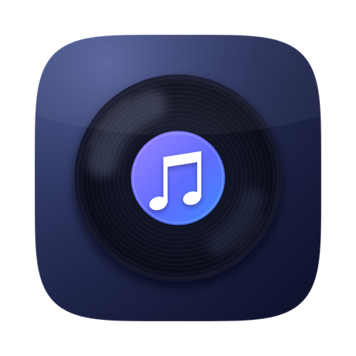
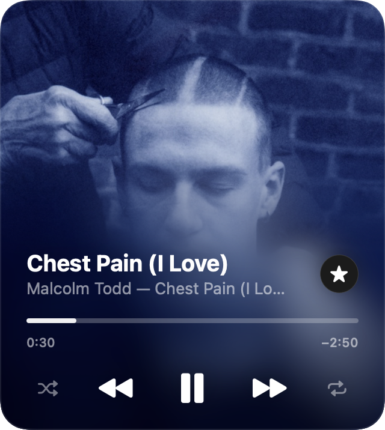
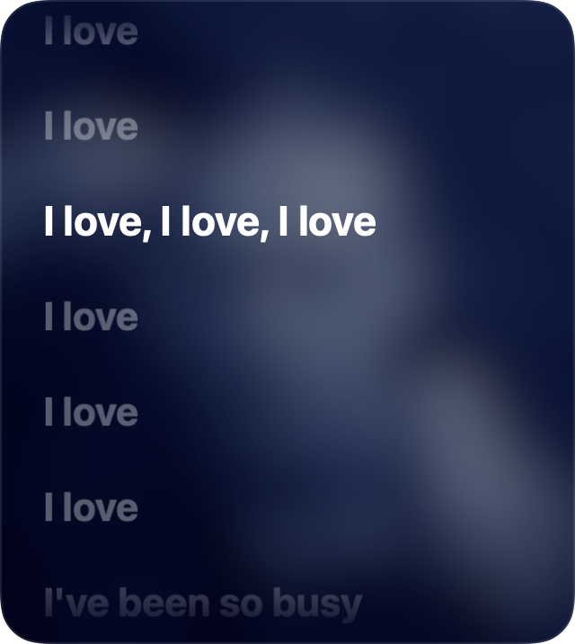
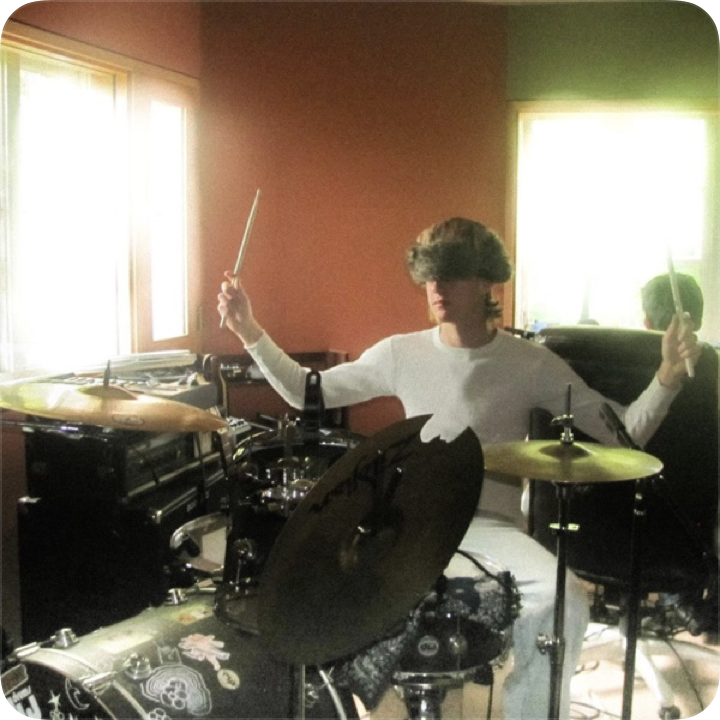
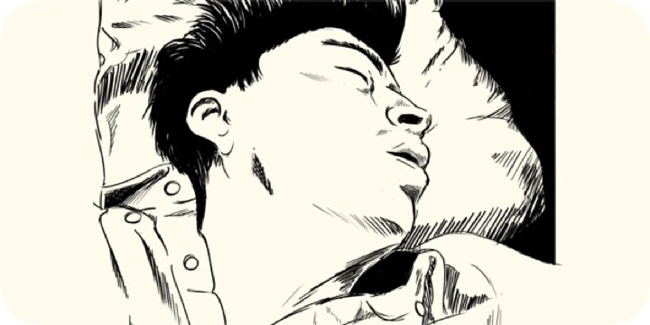
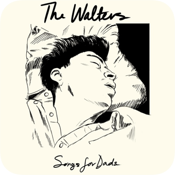

Apple Music, living on your desktop. An artwork-first widget with synced lyrics — free, native and open source. rota · Latin for “wheel”.
$ brew install --cask aalemoro/tap/rota --no-quarantine
macOS 14+ · unzip & drag to Applications also works — first launch: right-click → Open





Three native sizes. At rest, every one of them is pure album art — controls fade in on hover.
Edge-to-edge artwork melting into frosted glass, exactly like Apple Music's MiniPlayer — and when your mouse is away, it's just the album, like a photo widget.
Karaoke-style highlighting that scrolls with the song, via the open LRCLIB database. Click any line to jump right there.
Sits above the wallpaper under your windows, snaps into the native widget grid, comes in the three official sizes, survives reboots.
A true WidgetKit widget you add from right-click → Edit Widgets, with working play/pause and skip buttons.
Keyboard shortcuts, a draggable seek bar, and a scriptable rota:// URL scheme for Raycast, Shortcuts and friends.
No account, no analytics. Only track metadata leaves your Mac — to fetch lyrics and missing covers over HTTPS.